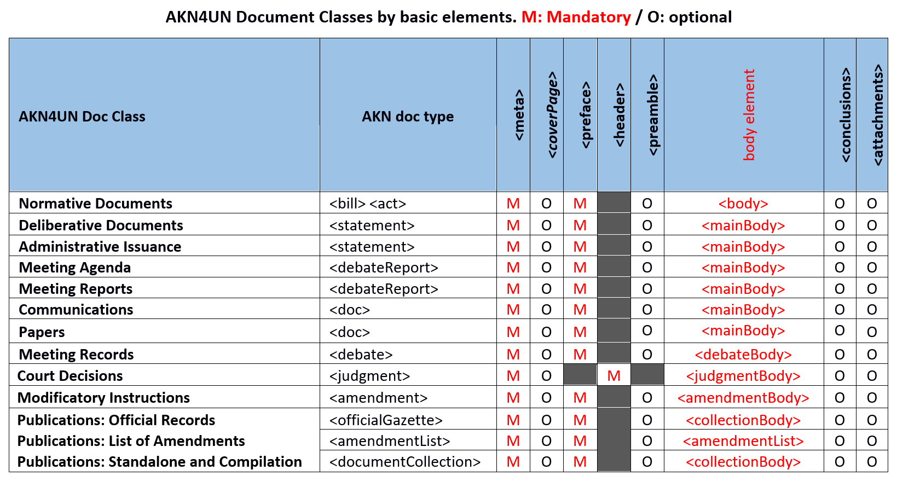
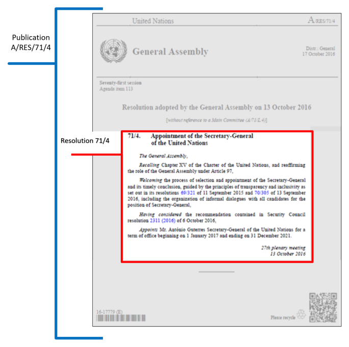

AKN4UN Modelling UN Document Classes
Basic Structures
In AKN4UN, Document Classes share the same basic structures and, to a different degree, the same organization of content. We have seen that Akoma Ntoso has identified the following basic structures: <coverPage> <preface> <header> <preamble> <{body elements of the different document types}> <conclusions> <attachments>.
AKN4UN Document Classes use different sets of "basic structures". The table below shows the basic structures for each AKN4UN Document Class. It states which basic structures are "mandatory (M)" or "optional (O)" for AKN4UN.

The basic structures are not the only aspect shared among different document types. They also share a number of characteristics:
All basic structure elements belong to a purely structural content model, no text is allowed directly inside them, only in other elements within them.
The elements <coverPage> <preamble> <conclusions> largely share the same content model. We recommend using <container> elements to group content marked-up using inline or block elements The attribute @name is required and may be used to specify the content of the <container name=""> or left empty.
The <{main content body}> elements, even if they have a structural complexity that reflects the different document types, share elements that behave according to their model (pattern) across all body types.
Since, for instance, the characteristics of <preface> are the same across all document types, we will describe all the basic element types, apart from <{main content body}> ones, in this section and refer to it in the different document types in order to avoid duplications.
<coverPage>
The <coverPage> element contains all the textual content of a typical cover (masthead), such as the name of the publisher, serial number, issuing authority, legislature or session number, etc. It may contain one or more <container> elements. The attribute @name within <container> is required and may be used to specify the content of the <container name="">, e.g. footer, etc, or may be left blank.
<preface>
The <preface> element contains any matter found at the beginning of a document up to where the <preamble> or the <{body}> begins. It may contain information identifying the document as it appears visually in printed or online versions, e.g. document name, title, number, authors and/or sponsors, and date. It may also contain content that may be considered, in common drafting parlance, a "preface".
Whenever the text contains specific information about the document and its authors, or any other information describing its provenance, these are marked-up using inline elements. The inline elements which may be used, wherever appropriate, are: <docType>, <docTitle>, <docNumber>, <docProponent>, <docIntroducer>, <docDate>, <docPurpose>, <docStage>, <session>, <docCommittee>, <docStatus>.
If and when there are specific semantic parts that are not covered by the AKN elements, the generic <inline> element qualified by the @name (required) and @refersTo (optional) attributes should be used. A list of AKN4UN recommended attributes values is provided in Annex I: AKN4UN Attribute Values.
Akoma Ntoso recommends that the above inline elements starting with "doc" be used preferably only in the preface. Usually, when one of the above elements is used in the preface, its @refersTo attribute will refer to the corresponding metadata described in a Top Level Class (TLC). When the element is used outside of the preface, the element may refer to information that is not included in the metadata of that instance. For those cases the "refersTo" attribute shall point to the related locally defined top-level class entry or must be left empty.
The <toc> element may be used only at the place where a static table of content appears in the content and cannot be used for the mark-up of the dynamically created table of contents that will be generated by the rendering service. The <placeholder> element will be used for the mark-up of the position where the rendering service must display the dynamically created table of contents <toc>.
NOTE: The <preface> does not correspond to the term "preface" (i.e. an introduction typically stating its subject, scope, or aims.) but more generally it contains any matter found at the beginning of a document. This often includes the document name, number, authors or sponsors, and the long and short title, and it may also contain content that may be considered, in common drafting parlance, a "preface".
<header>
The <header> element is used only in the <judgment> document type, and contains any matter found at the beginning of a court decision, from the very beginning of a document up to where the <judgmentBody> begins. It may contain information about the parties, lawyers, judges, judgment, identification number, type of court, jurisdiction, case number, procedure phases, etc.
It reports relevant information to identify "documents" and "authors". Akoma Ntoso has also specific elements of <header>: such us: <courtType>, <neutralCitation>, <party>, <judge>, <docJurisdiction> which must be used whenever appropriate.
If and when there are specific semantic parts that are not covered by the AKN elements, the generic <inline> element qualified by the @name and @refersTo attributes should be used. A list of AKN4UN attributes values is provided in Annex I: AKN4UN Attributes Values.
<preamble>
The <preamble> element is used to mark-up the initial part of a document stating its purpose, aim and justification (introduction, motivation, purpose, or legal basis of a document).
This part may consist of one or more different paragraphs, usually not numbered. At times, it might be structured as a single long sentence formatted into multiple paragraphs for readability, in which each of the paragraphs begins with a verb. The <preamble> element must contain one or more <container> elements. The attribute @name is required and ay be used to specify the content of the <container name=""> e.g. using the action verbs.
The <preamble> element contains at least one or more <container> elements and may include some or all the informational parts below; their order is determined by the natural order of the text as it appears on the document:
<formula> describes the enacting sentences which, in many legal traditions, are regular and fixed linguistic expressions.
<recitals> include motivations and justifications of the legal document, with individual <recital> elements within it.
<citations> include references to other legal documents that are fundamental to the current text: legal basis, preparatory documents as well as normative procedures, with individual <citation> elements within it.
The preamble may start with a formula containing the authorities that promulgate the document and may end with a promulgation formula. Both should be marked-up with the <formula> element, generic element, which requires @name attribute (see Annex I) and may be further qualified by the @refersTo attribute
Several recitals are all grouped within the <recital> element. They usually start with an introductory phrase ("Whereas:" in English), which will be marked with the <intro> element. Each recital will be marked with the <recital> element. If the recitals are numbered, the number must be marked with the <num> sub-element.
The citations are grouped within the <citations> element. Each citation will be marked with the <citation> element. The structuring of the citations may also be further qualified using the @refersTo attribute of the citation pointing to the related TLC class.
Paragraphs of text in the <preamble> may be marked as <p> elements, and the text within the paragraphs may be marked up with inline elements if required. If you wish to group a series of paragraphs, you will have to use a <container> element to contain them.
Below we have an example XML skeleton of <preamble>.
""""
<preamble>
<formula name="">
<p> </p>
</formula>
<citations>
<citation>
<p> </p>
</citation>
<citation>
<p> </p>
</citation>
</citations>
<recitals>
<intro>
<p>Whereas:</p>
</intro>
<recital>
<num>(1)</num>
<p> </p>
</recital>
<recital>
<num>(2)</num>
<p> </p>
</recital>
</recitals>
<formula name="">
<p> </p>
</formula>
</preamble>
We strongly recommend using <container> as the generic holder of other content. The @name attribute may be used to give the grouping semantic context.
<{main content body}>
The <{main content body}> elements are the parts where document types differ the most and where the structural complexity of the different document types is reflected. There are six different body elements, corresponding to the six document structures:
<body> ― This is the most common element and it models the hierarchical structure.
<debateBody> ― This element contains the structures necessary to record a debate. It does not support hierarchical structures, and it is the only "body" not to explicitly allow hierarchical structures.
<judgmentBody> ― This element contains the hierarchical structures necessary to describe a judge's opinion or ruling.
<mainBody> ― This element contains a general set of structures which may be used in a variety of ways.
<amendmentBody> ― This element contains the structures needed to describe a single change.
<collectionBody> ― This element allows a collection of documents to be composed. The documents may either be embedded or included by reference.
These elements will be described in all AKN4UN Document Classes because, even if they may be shared in different documentTypes, each of them has specific features.
<conclusions>
The <conclusions> element contains all concluding matters of a document, e.g. dates, place, witnessing clause, parties and signatures. Structurally, <conclusions> follows the model of the <preamble>. It must contain one or more <container> elements. The attribute @name is required and may be used to specify the content of the <container name="">.
The <conclusions> may also record the outcome of an event, for example the text describing an adoption and a vote at the end of a meeting is marked up as follows:
<conclusions>
<container name="">
<p>
<vote by="#securityCouncil" as="#author" choice="#majorityMembers">
<outcome refersTo="#adopted"> Adopted </outcome>
</vote>
<event refersTo="#meeting1747"> at the 1747th meeting </event>
by
<quantity refersTo="#resolutionForVotes"> 14 </quantity>
votes to
<quantity refersTo="#resolutionAgainstVotes"> none </quantity>.
</p>
</container>
</conclusions>
Concluding sections called "conclusions" (e.g. in reports) are not a conclusion in the sense of Akoma Ntoso
<attachments>
The <attachments> element may either contain or reference another document, typically an annex, appendix, or report, which is attached to the main document, but not treated as part of the content of the main document.
There are two distinct cases for modelling <attachments> to a document.
If the attachment is an autonomous document, i.e. having a distinct identity from the current document, then the attachment uses its distinct IRI. The attachment document itself may be completely embedded within <attachment> or referenced using <documentRef> by the distinct IRI of that document. In such cases, the <num> or <heading> tag is required if there is no title in the annex/attachment itself. @showAs should contain the title of the annex in all cases.
For non-autonomous documents, which do not have a distinct identity independent of the current document, the attachment is identified using a component IRI of the main document. Like the earlier case, the document may be expanded fully within <attachment> or referenced using the component IRI of the main document.
In the below example, the attachment is autonomous and has a distinct identity from the main document and so it contains references to the components of documents that are marked as separate AKN4UN instances:
<attachments>
<attachment>
<heading>Annex</heading>
<documentRef href="/akn/un/..." showAs="Annex 1"/>
</attachment>
</attachments>
In the below example, the attachment is a component of the main document, and it is not an autonomous document. The attachment component uses the IRI of the main document.
<akomaNtoso>
<act name="resolution">
<meta>
<identification source="#un">
<FRBRWork>
<FRBRthis value="{mainDocumentIRI}"/>
...
</FRBRWork>
...
</identification>
...
</meta>
<body> ... </body>
<attachments>
<attachment eId="comp_1">
<doc name="annex">
<meta>
<identification source="#un">
<FRBRWork>
<FRBRthis value="{mainDocumentIRI}!annex_1"/>
...
</FRBRWork>
....
</identification>
</meta>
</doc>
</attachment>
</attachments>
"""" </act>
</akomaNtoso>
AKN4UN: Modelling of UN Document Classes
Before we proceed with the AKN4UN modelling of UN Document Classes in Akoma Ntoso, it is useful to recall that UN Document Classes represent abstract typologies of documents. They are not designed to represent any specific type of document of an organization. They are tailored to represent different typologies of documents across their complete lifecycle by identifying commonalities and patterns in function and structure. The UN Document Classes are designed to represent:
Core features of UN document types. They are meant to describe classes of documents that, to a large degree, have the same function, play the same legal role and have the same content structure across UN organizations.
Whole lifecycles of documents, from when they were drafted until when its workflow has been completed in all its forms and not just a specific state.
AKN4UN Document Classes makes also the very important distinction between:
"Document" as it appears to the readers in whatever medium it may be, whether on paper, electronic format, web page, etc.
"Logical Component": any logically and functionally distinct component of a "document".
The modelling of "documents" as made up of the different components is a very critical feature of AKN4UN because it is what enables an effective reuse of logical components both during the lifecycle of a document and across documents and applications.
Modelling of AKN4UN Document Classes
AKN4UN modelling of the UN Document Classes provides a non-exhaustive list of elements that a specific document typology may have across all organizations and across all the possible stages of its lifecycle.
It will be up to the individual organization, during the implementation of the standard, to select the most appropriate elements to model their specific documents according to their own specific requirements.
For example, the modelling of "Deliberative Documents Class" (e.g. resolutions) is not focused on a specific resolution of a specific organization, instead, we strived to use examples from normative documents of different members of the Working Group.
The aim was to show the variability and the cases that were more complex since from them it will be easy to build the simpler ones. For instance, the "Deliberative Documents Class" will describe all the characteristics that deliberative documents may have across all the UN organizations, with the objective of covering all the variances that may exist.
If we take e.g. "resolutions", we will have the model of what we call the "logical component" (core resolution) in the "Deliberative Documents Class" and the model of the "documents/publications" in which a resolution may appear (dealt with by the "Document Class Publications"). To visually clarify what constitutes the "publication" and what the "logical component" the image below shows the publication of a resolution and the relationship between the logical resolution and the publication container.
Table: Resolution Publication

UN documents are currently digitally rendered in essentially two forms:
e-Paper documents: these documents reproduce all the traditional formatting features of UN paper publications and documents. Currently, this is the case of PDF documents designed precisely to be electronic versions of paper documents that keeps all the formatting of the paper publications.
Web-documents: these documents focus on what we may call the "core content" and leave out all the "publication features" e.g. cover page/masthead, headers, footers, etc. Currently this is the case of web documents (HTML), that in most cases drop all the "publication" overhead to just focus on content and presentation of the core content.
Taking the example of the resolution publication, it may be modelled using:
AKN4UN <documentCollection name="publication"> for the publication content (masthead info, publication titles etc. headers, footers etc.); document collection that will contain an …
AKN4UN <statement name="resolution"> for the actual core content of the resolution.
In this way, using both the "collection-publication" and "statement-resolution", it is possible to easily reproduce both "e-paper-document" and publish directly in on the Web. To publish the same resolution as web document, only the AKN4UN <statement name="resolution"> with the actual core content of the resolution will be used. If there will be need to also show the data of the publication, e.g. document identifier e.g. A/RES/70/1 those data will be retrieved by the publication instance.
NOTE:
The AKN4UN Document Classes are meant to model the "logical components" of UN "physical documents".
Most UN documents/publications will actually be modelled by more than one AKN4UN Document Classes.
In the following examples, the focus is on the structural mark-up of AKN4UN document classes. If we would have added to the examples below, a full semantic mark-up, the code would have been unreadable, defeating the purpose of showcasing how the document structures and subdivisions may be handled.
The basic structure <coverPage> will not be dealt with in each Document Class, only in modelling of the "Publication Document Class" because of the AKN4UN choice of focusing on "logical documents". In UN documents, most of the times "cover pages/mastheads" are part of the "Publication Document Class" which contains the document (which is in turn based on the Document Class). If there is a need to model <coverPage> within the other Document Classes, please refer to the "Publication Document Class".